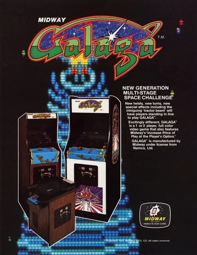
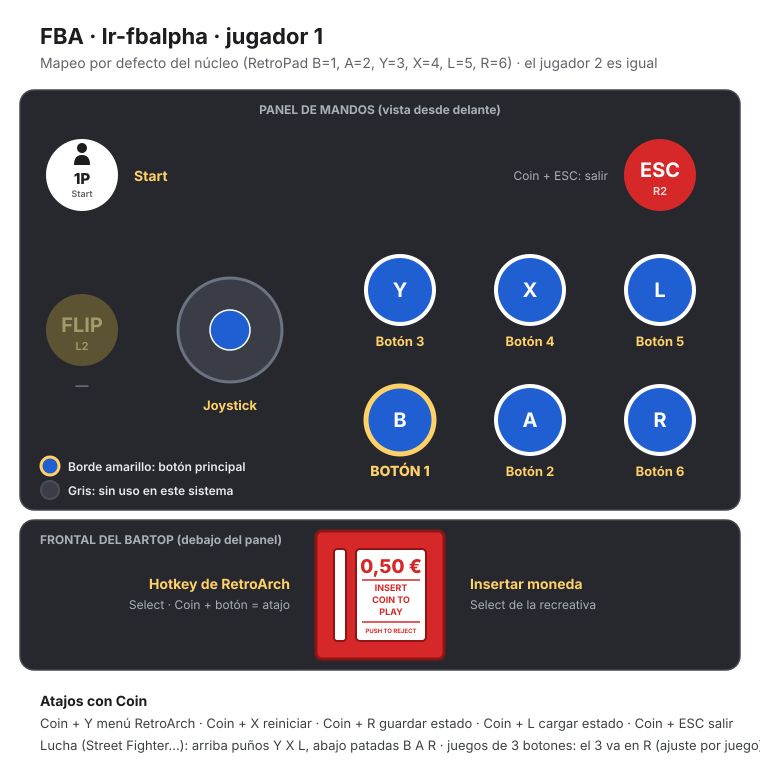

FBA (FinalBurn Alpha)
Galaga
- Año: 1981
- Desarrollador: Namco
- Género: Disparos / Galería de tiro
- Jugadores: 2 jugadores
El jugador controla una nave que debe enfrentarse contra un enjambre de alienígenas con forma de insecto que le atacarán disparando bombas y actuando como kamikazes. Cuando inicia el juego, los alienígenas no aparecen inmediatamente. En su lugar, aparecen haciendo piruetas para después tomar un lugar en una formación. No disparan cuando están allí, sólo lo hacen cuando salen de la formación para tratar de acercarse lo más posible al jugador y así aniquilarlo.
Adicionalmente, encima de los alienígenas "comunes" se encuentran los "Boss Galaga". Estos alienígenas tienen dos pecularidades:
- Necesitan dos disparos para ser eliminados.
- Tienen el poder de usar el llamado "Tractor Beam". Cuando un Boss esté a medio camino entre la formación y el jugador, usará un láser para tratar de secuestrar la nave. El jugador puede rescatarla disparando al Boss Galaga, lo que hará que la nave secuestrada se coloque al lado de la actual, pudiendo disparar así dos bombas al mismo tiempo.
Cada tres niveles el jugador podrá participar en un "Challenging Stage", donde deberá disparar a 40 alienígenas, los cuales harán diferentes piruetas para no ser eliminados. Si se los consigue eliminar a todos, el juego regalará 10000 puntos como premio, de lo contrario 100 por cada uno.
A partir del Nivel 4, los enemigos "comunes" se pueden triplicar en tres alienígenas iguales.
Controles
Un botón.
| Panel | Juego |
|---|---|
 | Disparar |
 | Empezar |
 | Meter una moneda |
+  | Salir del juego |
El panel en FBA (FinalBurn Alpha)


Longplay

Partida completa de la recreativa (35 min), de World-of-Longplays: Arcade Longplay [535] Galaga.